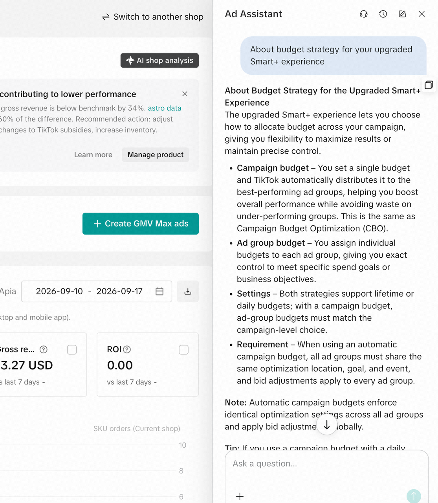

从业务问题出发，完成场景识别、价值验证、应用交付与持续运营
“不是多一个工具，而是让团队拥有一项能持续运转的业务能力。”
当数据、状态和规则分散在多个系统中，AI 可以汇总上下文、解释问题原因，并给出下一步建议。

从高价值场景开始，不以技术展示为终点。
识别、验证、交付、运营，形成可以复制的落地路径。
将复杂业务排查转化为即时、可解释的智能诊断。
真实业务场景 · 对外版本将完成信息脱敏
从一个高价值场景开始，逐步进入岗位、流程与企业运营。
统一管理应用版本、能力配置和效果验证，让企业的 AI 应用可以持续优化，而不是一次性项目。